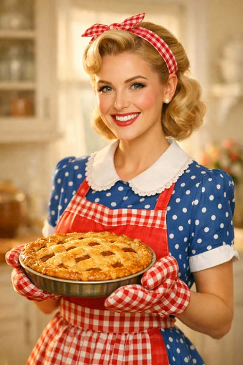

> AESTHETIC_LOGIC: Viele KI-Bilder haben diese seltsame "Plastik-Optik". Die Haut ist perfekt, Poren fehlen und alles wirkt wie aus einer Werbebroschüre. Das ist kein technischer Fehler, sondern eine logische Folge der Mathematik hinter der KI.
> MEAN_IMAGES: Laut Hito Steyerl (2023) erzeugt die KI sogenannte "Mean Images" (Durchschnittsbilder). Da die Modelle mit Milliarden Bildern trainiert werden, errechnen sie für jedes Motiv den statistischen Mittelwert. Alles, was "echt" oder "menschlich" wirkt; wie Falten, Narben, Leberflecke oder Asymmetrien –, wird vom Algorithmus als störendes "Rauschen" (Noise) interpretiert und im Erstellungsprozess einfach weggeschliffen.
> PROBLEM: Durch diese automatische Glättung entsteht eine visuelle "Sauberkeit", die Vielfalt erstickt. Wir sehen keine echten Menschen mehr, sondern nur noch eine mathematisch optimierte Version eines globalen, westlich-zentrierten Schönheitsideals, das Individualität als Rechenfehler aussortiert.

> FULL_PROMPT:
"A young blonde woman in a nostalgic ‚tradwife‘ look, set in a pristine, sun-filled kitchen. Dressed in a vintage blue polka-dot dress with a white collar, a red apron, and styled 1950s hair with a matching headband, she shines as she holds a golden-brown apple pie, surrounded by soft, warm lighting and a blurry background that emphasizes her radiant presence."
> EXPERIMENT_ANALYSE: Trotz der extrem hohen Detaildichte im Prompt liefert die KI kein individuelles Bild, sondern ein völlig generisches Klischee, das eher an ein Stockfoto erinnert als an eine authentische Szene. Die KI nutzt visuelle Codes von "Nostalgie" und "Schönheit", um sie direkt mit veralteten Rollenbildern zu verknüpfen.
> THEORIE: Die Forschung von Luccioni et al. (2023) beweist die sogenannte "Stereotype Amplification". Das bedeutet: Die KI spiegelt Vorurteile aus dem Internet nicht nur einfach wider, sie verstärkt sie massiv. Weil die Frau in der Küche in den Trainingsdaten so oft vorkommt, entscheidet sich das Modell mathematisch für die extremste, klischeehafteste Version, um die "wahrscheinlichste" Antwort auf den Prompt zu geben.
[GOTO: GESCHLECHT]> STATUS_UPDATE: Wir verlassen gerade die Zeit, in der man KI-Bilder sofort an der "Plastik-Haut" erkennt. Moderne Modelle können heute Poren, feinste Härchen und sogar kleine Bildfehler so perfekt simulieren, dass man sie nicht mehr von echten Fotos unterscheiden kann. Das "Uncanny Valley" (das unheimliche Gefühl bei fast echten Gesichtern) wird gerade überwunden.
> GEFAHR: Diese technische Perfektion ist eine Falle. Nightingale & Farid (2022) konnten nachweisen, dass Menschen KI-generierte Gesichter mittlerweile nicht nur für realer halten als echte Fotos, sondern sie sogar als vertrauenswürdiger einstufen. Wir glauben der KI mehr als dem menschlichen Original.
> FAZIT: Wenn die Klischees aus Box 2 hinter einer täuschend echten Optik verschwinden, wird die Manipulation unsichtbar. Wir hinterfragen die Vorurteile im Bild nicht mehr, weil unser Gehirn das Bild als "echte Realität" akzeptiert. Es entsteht eine "Hyperrealität", in der das statistische Konstrukt glaubwürdiger wirkt als die physische Welt selbst.
[GOTO: POLITIK]> --- SOURCE_LOG ---
> [01] Steyerl, H. (2023): Mean Images. (PDF) > [02] Luccioni et al. (2023): Stable Bias. (arXiv PDF) > [03] Nightingale & Farid (2022): AI faces and trust. (ResearchGate)